Шежірелік еңбек
Құспан Бегешовтің шежірелік еңбегін зерттеп, жеке кітап етіп шығару.
Алаша руының Сарыбас атасынан тараған ұрпақтың шежіресі, тарихи мұрасы мен елге еңбегі сіңген тұлғалары туралы кітапқа қосымша мәлімет.
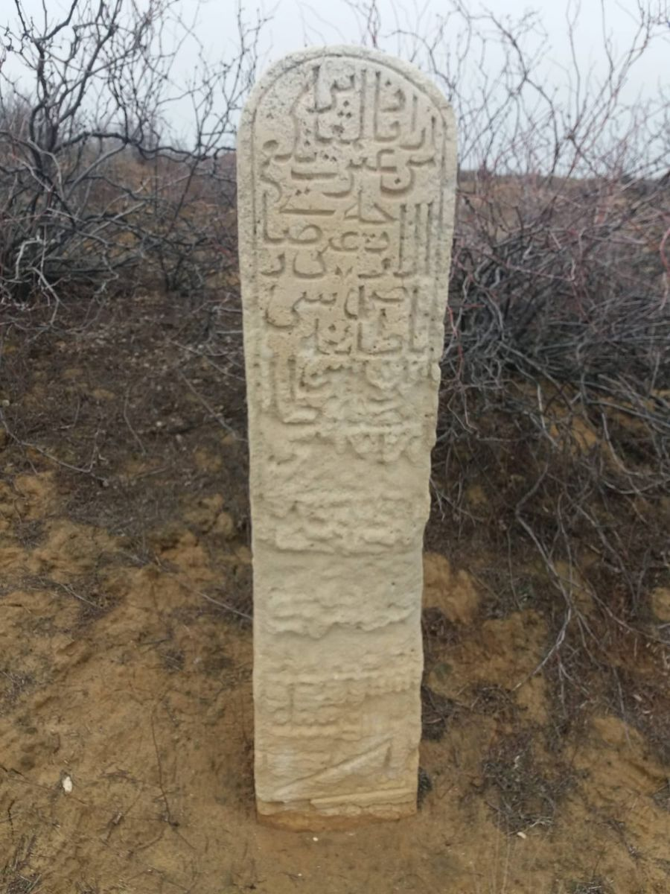
Басты мақсат – тарихи жадыны жаңғырту, Алаша – Сарыбас ұрпақтарының бірлігін нығайту және шежірелік мұраны келер ұрпаққа жеткізу. Бұл жолда төрт бағыт белгіленген.
Құспан Бегешовтің шежірелік еңбегін зерттеп, жеке кітап етіп шығару.
Сарыбас ұрпақтарының тарихи-мәдени мұрасын сақтайтын қор жұмысын ұйымдастыру.
Көкбие шоқысы мен Сарыбастар қорымының тарихын құжаттандыру.
Жыл сайын дәстүрлі шежірелік басқосу өткізіп, ағайынның басын қосу.
Құлпытас – ата-баба туралы ең көне әрі ең сенімді дерек көздерінің бірі. Жел мен жаңбыр жазуды жылдан жылға мүжи береді, сондықтан әр тасты суретке түсіріп, жазуын оқытып, тұрған орнын белгілеп алу кезек күттірмейтін іс.
Адал еңбегімен ел құрметіне бөленген азамат
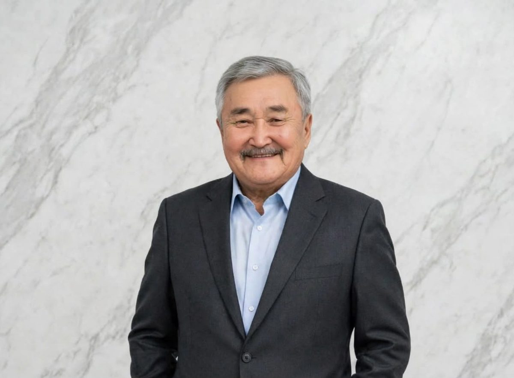
Такси Талап үшін табыс көзі ғана емес, ауылдастарына қызмет етудің жолы болды. Көпжасар тұрғындарын аудан орталығына, көрші ауылдарға жеткізді: біреу науқасын дәрігерге апарады, біреу тойға, құдалыққа немесе садақаға асығады.
Қыстың боранында да, жаздың аптабында да, күндіз-түні демей жолға шықты. Жолаушыны діттеген жеріне жеткізуді азаматтық міндеті санады.
Жолаушыға тек ақша есебімен қараған жоқ. Қалтасы жұқа, жолақысын толық төлей алмайтын адамды да қабақ шытпай, артық сөз айтпай жеткізіп салатын. Ол үшін елдің алғысы материалдық пайдадан жоғары тұрды.
Жасаған көмегін жария етпей, қарапайым қалпынан айнымай өмір сүріп келеді.
Жұбайы Гүлайым екеуі ұл-қыз тәрбиелеп өсірді. Бүгінде немере-жиендерінің ортасында отырған бақытты ата мен әже.
«Жақсының жақсылығын айт, нұры тасысын»
Сарыбастан Байтоқа, одан Тұтқыш тарайды. Талап осы Тұтқыш тармағының ұрпағы, ал тізбекті бүгінде оның ұлы жалғап отыр.
Тізбек отбасылық суретте көрінетін шежіре тақтасындағы жазу бойынша берілді. Аталардың толық тізімі мен жылдары кітапта нақтыланады.
Алаша Сарыбас қорының екі төс белгісі бар. Әрқайсысы өз куәлігімен бірге табысталады, төменде солардың үлгілері берілген.
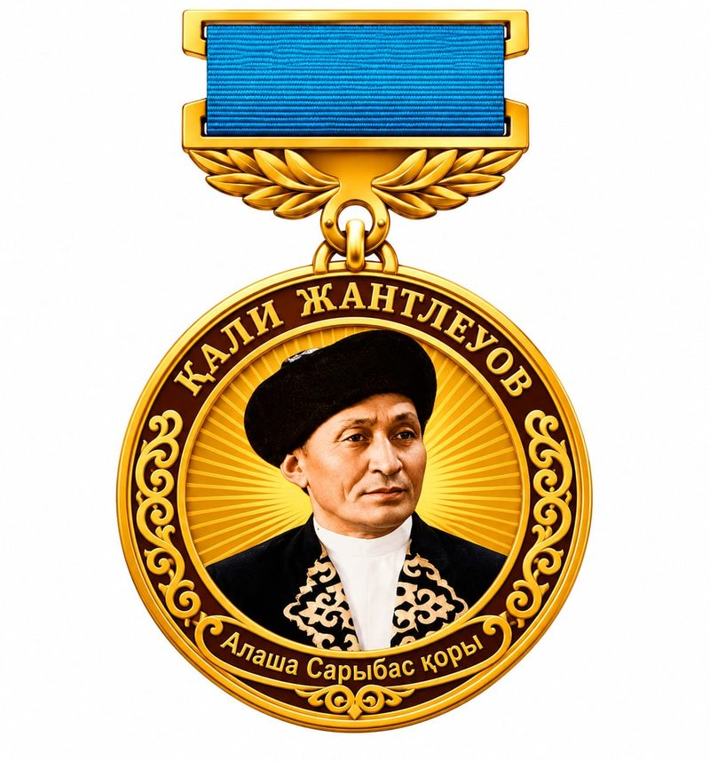
Қазақ ССР Халық артисі, Қазақстанның көрнекті күйшісі Қали Жантлеуовтің есімімен аталады. Белгінің төменгі жиегінде «Алаша Сарыбас қоры» деген жазу бар.
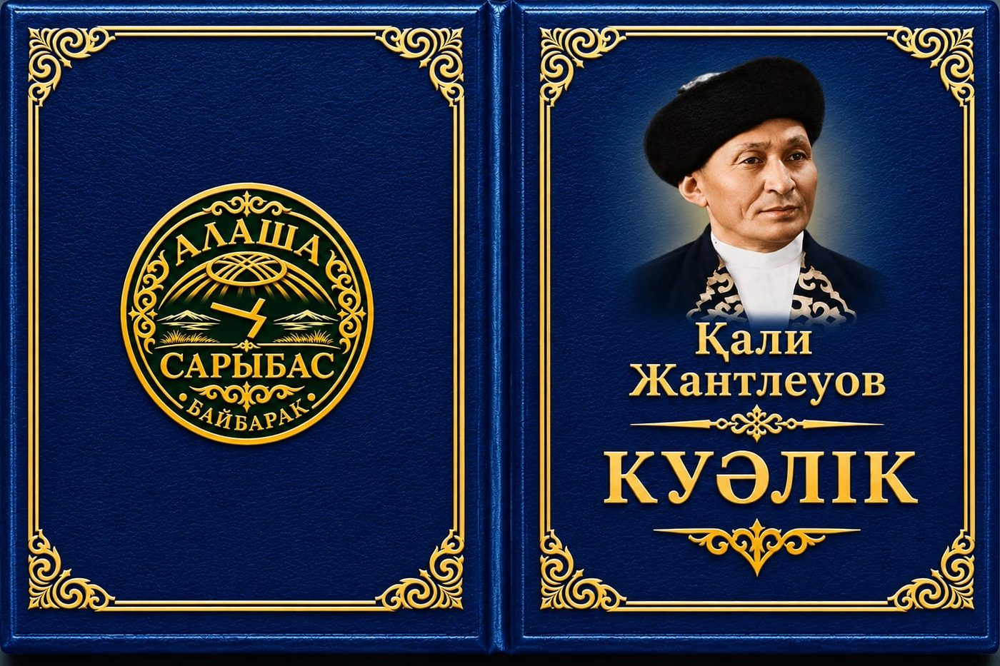
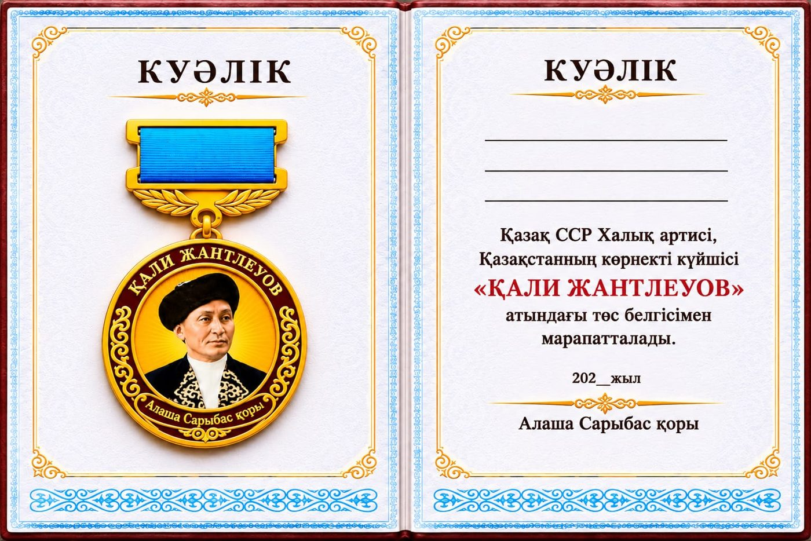
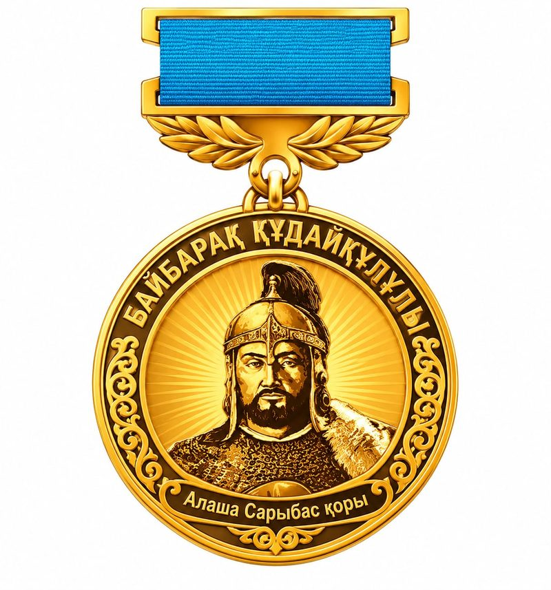
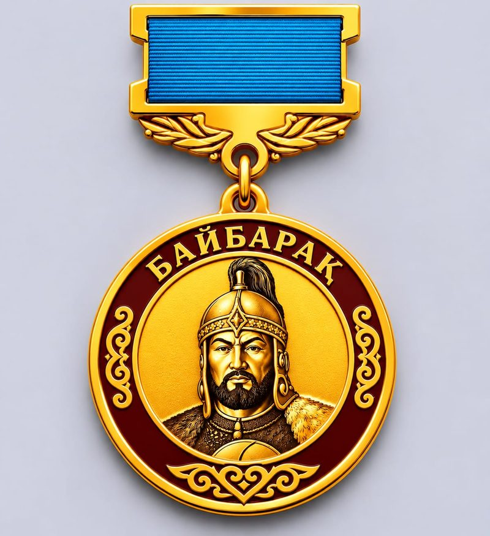
Есімі Алаша руының ұранына айналған батырдың құрметіне арналған. Төс белгі екі нұсқада, ал куәлік мұқабасы жасыл және қызыл күрең түсте жасалған.
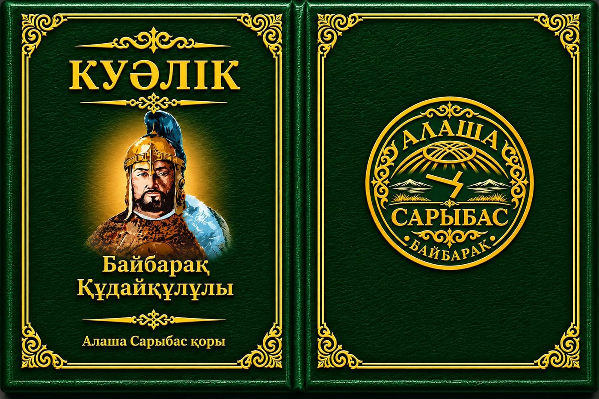
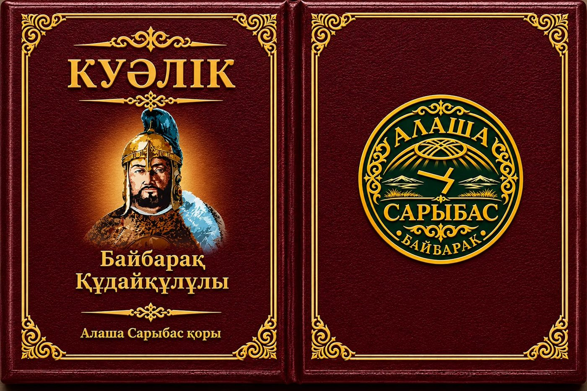
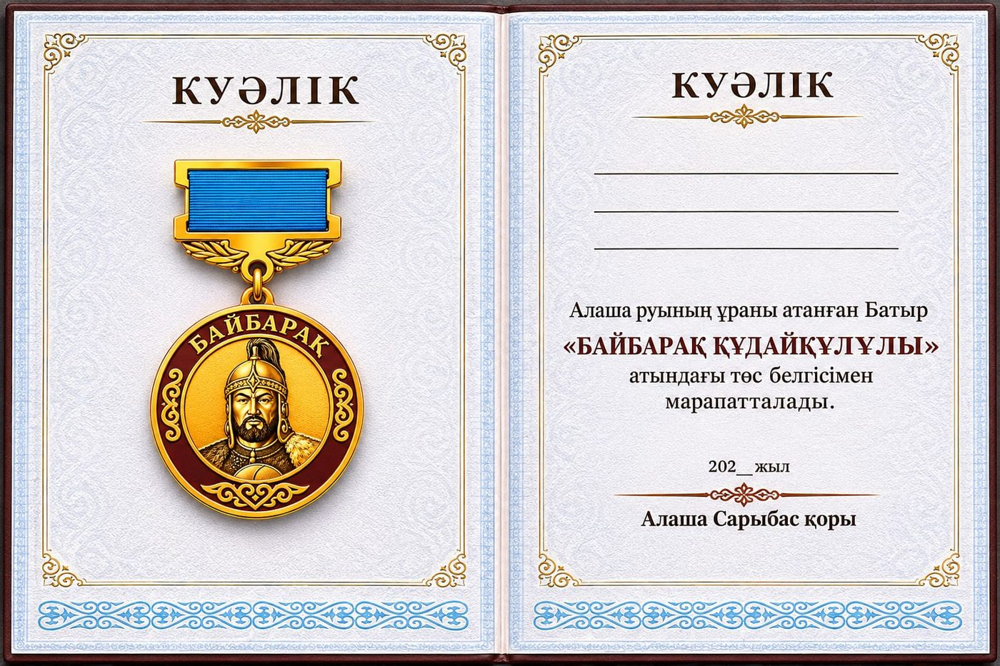
Адал еңбектің жемісі – тату шаңырақ пен ұрпақ қызығы.
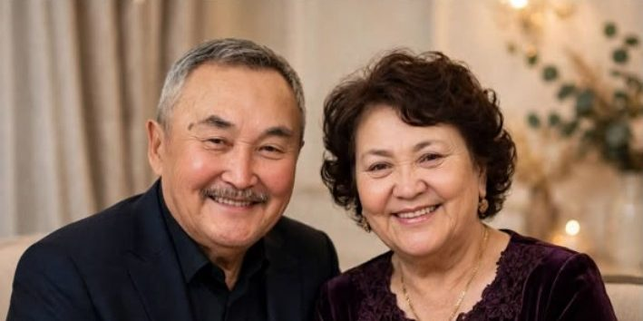
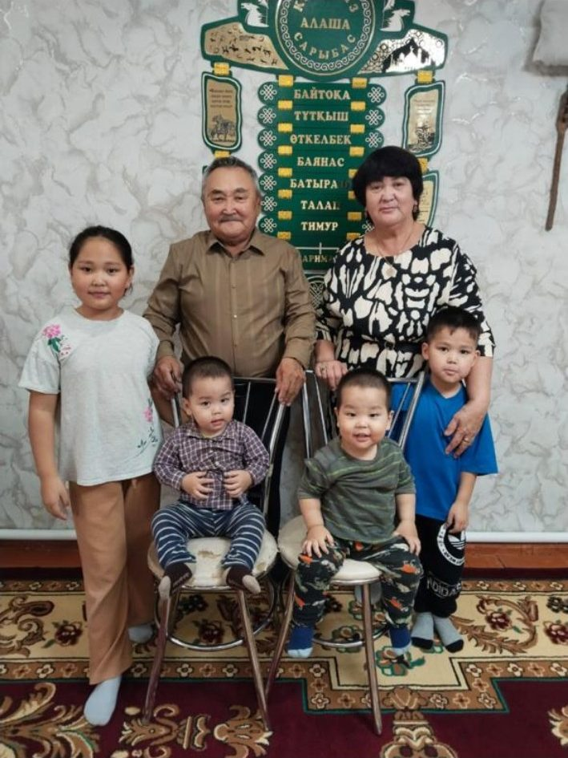
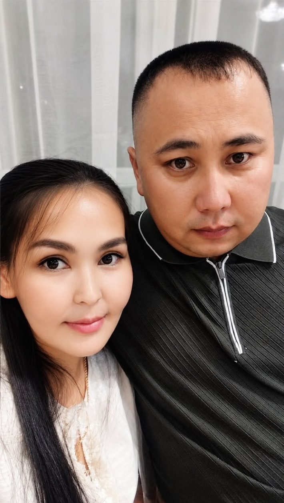